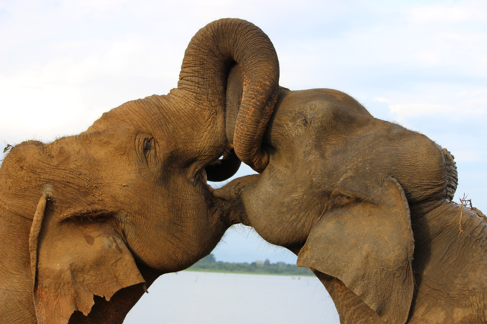
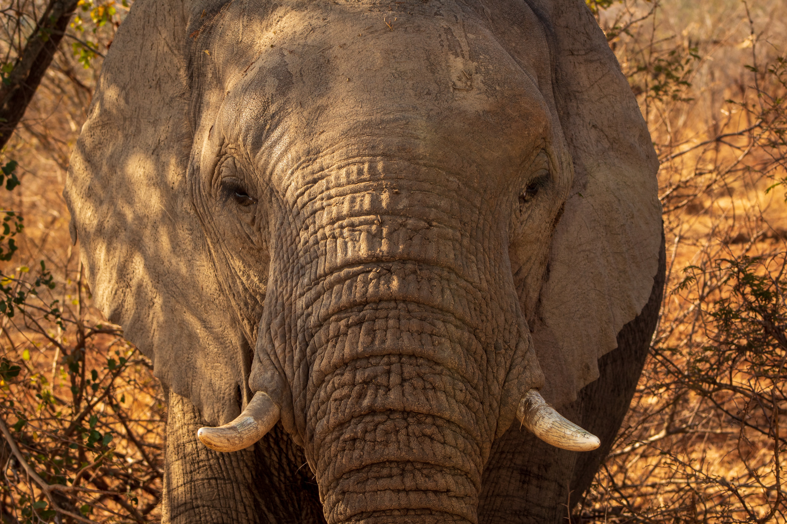

About Elephants
Get to know about Asia's largest land mammal.Behavior,ecology,facts.
Elephants communicate using sound and scent.African elephants are also very sensitive to seismic cues, though similar research on Asian elephants is lacking. They produce a number of distinct vocalization types, ranging from very low frequency 'growls' and 'rumbles,' which may contain infrasonic components (below our hearing range), as well as high-pitched squeaks, squeals and trumpets. A male captive elephant named Koshik has even been demonstrated to imitate several words of Korean, an extremely rare ability among mammals. Asian elephants show various aspects of higher cognition, such as self-recognition, insightful problem solving, cooperation, and perhaps even reassurance and empathy.
Asian elephants are large-brained, and quite social. As with many mammals, females and young form herds while males separate from these herds during their teenage years to form their own parallel societies. Like their cousins, the African savannah elephant (Loxodonta africana), it's likely that the female herds typically consist of related individuals and herds may occasionally join up and mingle with one another. But unlike the African elephant, where the eldest female or 'matriarch' manages a very close-knit family that usually travels everywhere together, female Asian elephants tend to be very flexible and dynamic in their relationships over time. More research is needed in the different populations and subspecies to determine whether social organization shows variation in different environments.
Video brought to you by Think Elephants International
Asian elephants are large-brained, and quite social. As with many mammals, females and young form herds while males separate from these herds during their teenage years to form their own parallel societies. Like their cousins, the African savannah elephant (Loxodonta africana), it's likely that the female herds typically consist of related individuals and herds may occasionally join up and mingle with one another. But unlike the African elephant, where the eldest female or 'matriarch' manages a very close-knit family that usually travels everywhere together, female Asian elephants tend to be very flexible and dynamic in their relationships over time. More research is needed in the different populations and subspecies to determine whether social organization shows variation in different environments.
Elephants have a highly developed brain and the largest of all the land mammals. Their brain is 3 or 4 times larger than that of humans although smaller as a proportion of body weight. Elephants are extremely intelligent animals and have memories that span many years. It is this memory that serves matriarchs well during dry seasons when they need to guide their herds, sometimes for tens of miles, to watering holes that they remember from the past. Elephants are highly sensitive and caring animals. If a baby elephant complains, the entire family will rumble and go over to touch and caress it. Elephants express grief, joy, compassion, self-awareness, altruism, and play. Elephants pay homage to the bones of their dead, gently touching the skulls and tusks with their trunks and feet. When an elephant walks past a place that a loved one has died, he/she will stop; a silent and empty pause that can last several minutes. Elephants are one of the few species that recognize themselves in a mirror. The others are humans, apes, orcas, dolphins, and most recently discovered- magpies.
EYESIGHT
Elephants’ eyes are small; because of the position and size of the head and neck, they have limited peripheral vision. Reportedly elephants have poor eyesight with a range of only 25 ft. This is slightly improved in forest shade.
SKIN
An elephant’s skin is an inch thick in some areas but very thin behind their ears, under their legs (armpits), and around their eyes and rectum. Their skin is prone to irritation from insect bites. Asian elephants have more hair on their body than African elephants and this is especially evident in young Asian elephants, which are covered in a coat of reddish brown hair.
The skin color of Asian elephants is dark grey to brown, with patches of pink on the forehead, the ears, and sometimes the base of the trunk and chest.
TEETH
Elephants have four molars, one on the top and one on the bottom of both sides of the mouth. One molar can weigh about 5 lbs. and is the size of a brick.
Elephants have six sets of teeth over their lifetime, with old teeth being replaced as they wear out through use. New teeth grow in the back of the mouth and move forward to replace old worn sets. Once all of an elephant’s teeth are used up, it is unable to feed properly. Solitary elephants will usually die of starvation whereas herd elephants will help feed starving members of their group.
TAIL
An elephant’s tail can be as long as 4.2 ft. (1.3 meters) and is tipped by a series of very coarse, wire-like hair. They have an extraordinary degree of control over tail movement and use them as fly swatters against insects.
EARS
Asian elephant’s ears are much smaller than African elephant’s ears. Elephants have large, thin ears. Their ears are made up of a complex network of blood vessels, which help with regulating an elephant’s temperature. Blood is circulated through their ears to cool them down in hot climates.
African elephants often use their ears to communicate visually. Flapping their ears can signify either aggression or joy.